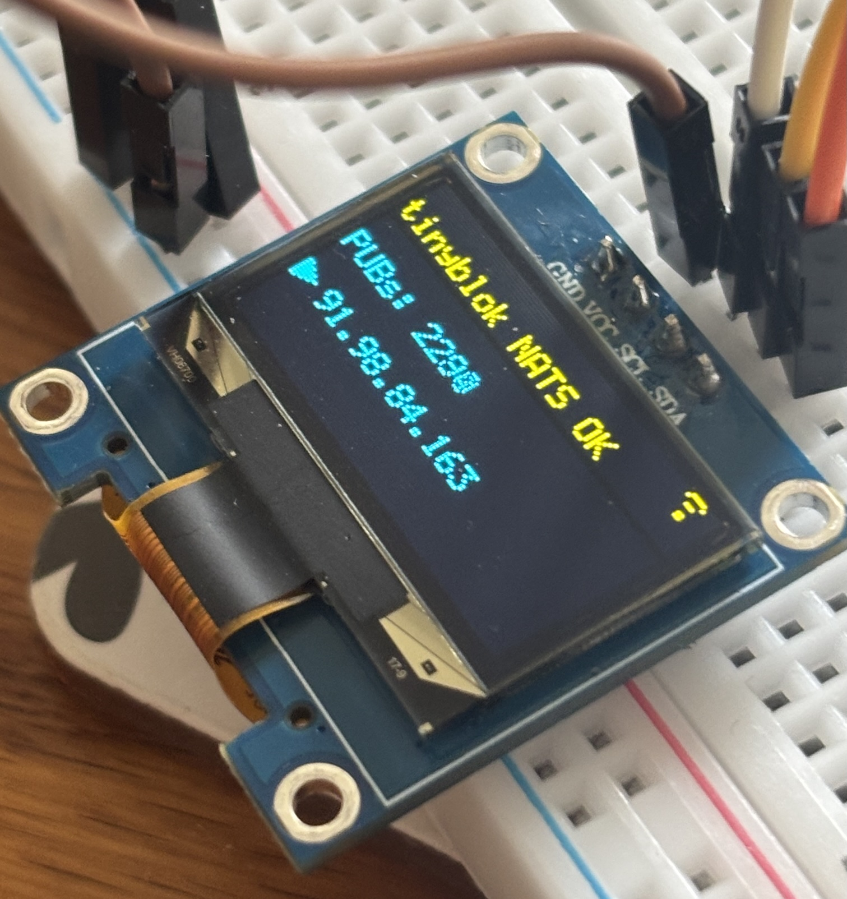
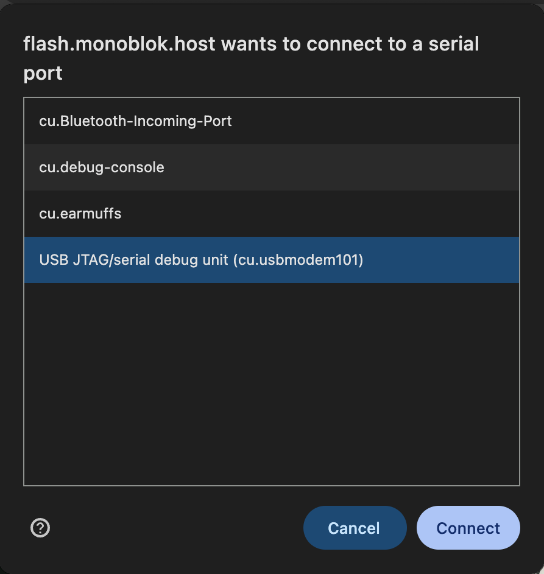
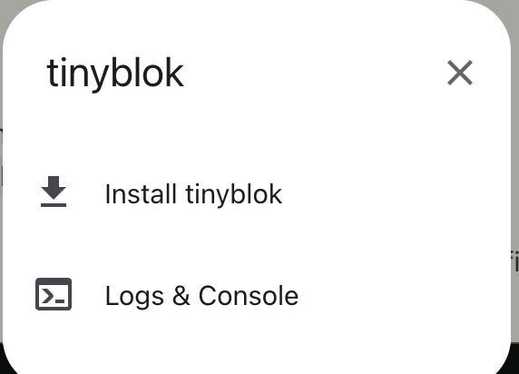
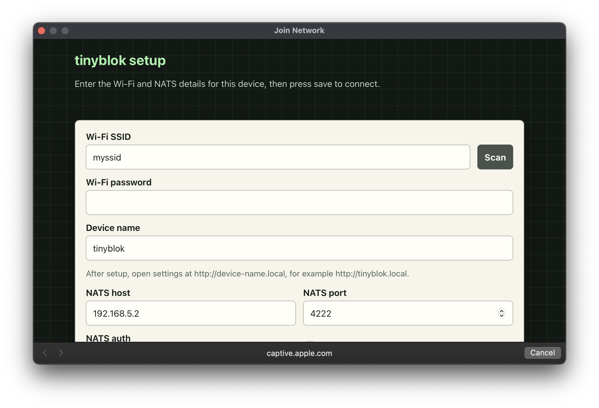

Start at
the sensor
tinyblok runs Patchbay Lite, a subset of patchbay for ESP32 telemetry. Condition readings on the board, then publish the results to NATS.

Install tinyblok on an ESP32-C6
Install prebuilt tinyblok firmware on an ESP32-C6. Connect the board over USB and open this page in Chrome or Edge on desktop.
Loading installer…
- Plug in your ESP32-C6 using a USB data cable.
- Click Install tinyblok and choose the board’s serial port. On macOS, look for
cu.usbmodem…. - Choose Install tinyblok in the dialog, then wait for the board to reboot.
What should I see?


Connect to Wi-Fi and NATS
- Join the board’s
TINYBLOKWi-Fi network. - Open the setup portal. If it does not appear automatically, visit 10.42.0.1.
- Enter your Wi-Fi, device name and NATS settings, then save. The board connects and reboots.
Once configured, use tinyblok.local to change settings or reset the board. If you chose another device name, use http://<device-name>.local.
Watch the board’s output on your NATS server.
nats sub 'tinyblok.>'